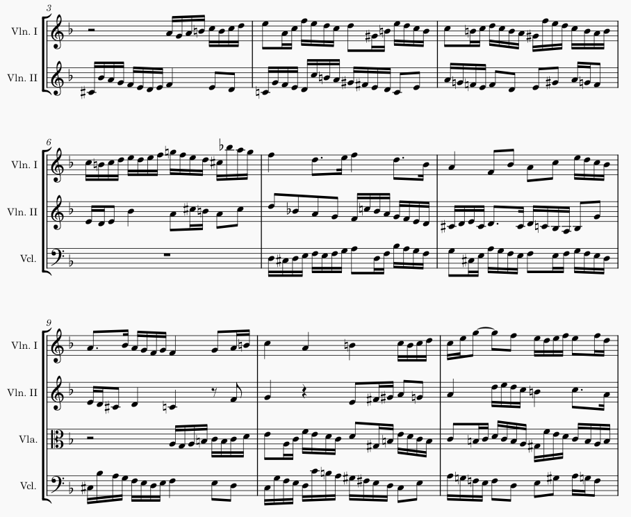
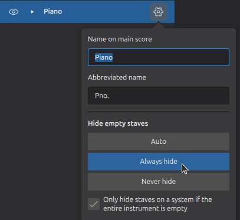
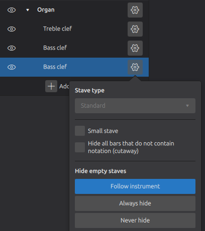
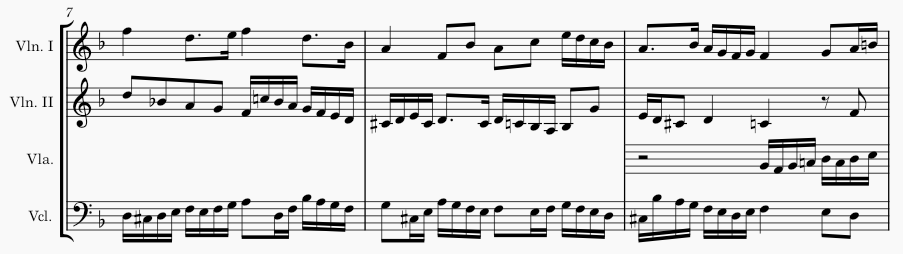
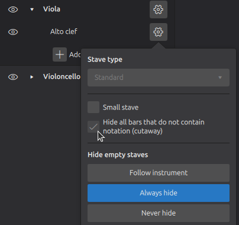

仅在需要时显示谱表
默认情况下，乐谱会在整份乐谱的所有页面上显示所有谱表的所有小节，无论它们是否为空。不过，你可能希望某些谱表只出现在需要的系统上，甚至希望某条谱表在系统中间出现或消失。MuseScore Studio 为此提供了多种控制手段。
要在整份乐谱中完全隐藏某件乐器或谱表，参见 隐藏乐器和谱表。
当谱表在整个系统上为空时隐藏它
如果一条谱表在整个系统上没有任何音符或其他标记（有少数例外），则该谱表被视为“空”。在许多出版的合奏和管弦乐谱中，隐藏这些空谱表以节省空间是常见的做法：

隐藏所有空谱表
要自动隐藏或显示当前乐谱中的所有空谱表：
- 确保乐谱中没有任何内容被选中（如有必要按 Esc）。
- 转到 属性 面板。
- 在 乐谱外观 下，勾选 自动隐藏所有空谱表。

格式 -> 样式 -> 乐谱 中也有相同的开关：

常见的做法（虽非普遍）是在乐谱的第一个系统上显示所有谱表，即使它们在后续系统上被隐藏（这样第一页总会显示完整的乐器编制）。如果你希望即使在第一个系统上也隐藏空谱表，请取消勾选 不要在第一个系统隐藏空谱表 开关。
如果取消勾选 当只跨越单条谱表时显示括号，那么当一个括号组中除一条谱表外的所有谱表都在某个系统上被隐藏时，括号和花括号也会被隐藏。如果你希望这些括号保持可见，请勾选此框。
排除特定谱表，使其不被隐藏
刚才描述的设置（自动隐藏所有空谱表）适用于乐谱中的所有谱表，但你可以使用 排版 面板（视图 -> 排版 或用 F7 切换）中的设置，为特定乐器和/或谱表覆盖此设置。
覆盖一件乐器的所有谱表
- 单击乐器名称旁的

- 在出现的弹出菜单中，为 隐藏空谱表 选择一个选项： * 自动：遵循整份乐谱的设置（这是默认选项） * 始终隐藏：谱表为空时始终隐藏（即使整份乐谱的设置未开启） * 从不隐藏：谱表为空时从不隐藏（即使整份乐谱的设置已开启）


始终隐藏 设置对于临时谱表很有用。例如：
- 只出现几小节的提示性谱表
- 键盘分谱中某段特定段落所需的第三条谱表（另见下文 Ossia）
默认情况下，只有在某个系统上所有乐器的谱表都为空时，谱表才会被隐藏。当你有一件多谱表的乐器（如钢琴或竖琴），但希望它的所有谱表都显示、即使其中一些为空（例如，在某个系统上只有右手在演奏）时，这很有用。如果你确实希望允许隐藏个别谱表，请取消勾选 仅当整个乐器为空时才在系统上隐藏谱表。请注意，此选项仅对多谱表的乐器可见。
覆盖一件乐器内的特定谱表
- 单击乐器名称旁的
- 单击谱表旁的
- 在出现的弹出菜单中，为 隐藏空谱表 选择一个选项： * 遵循乐器：遵循该乐器的设置（这是默认选项）。见上文 覆盖一件乐器的所有谱表。 * 始终隐藏：谱表为空时始终隐藏（即使整份乐谱的设置未开启）。 * 从不隐藏：谱表为空时从不隐藏（即使整份乐谱的设置已开启）。

当整个系统为空时选择显示哪条谱表
当某个系统的所有谱表都为空、且谱表隐藏已开启时，默认会显示最顶端的谱表。如果你希望在此情况下选择另一条（或另几条）谱表来显示：
- 确保 排版 面板可见（视图 -> 排版 或用 F7 切换）。
- 单击乐器名称旁的
- 单击谱表旁的
- 在出现的弹出菜单中，勾选 如果整个系统为空，则显示此谱表。
请注意，此设置独立于这里描述的所有其他设置，并且仅在整个系统为空时适用。
隐藏空小节
剖面谱表
在一些当代乐谱中使用一种样式，其中个别小节在为空时会被隐藏。这些有时被称为剖面谱表。

要对特定谱表使用此样式：
- 确保 排版 面板可见（视图 -> 排版 或用 F7 切换）。
- 单击乐器名称旁的
- 单击谱表旁的

请注意，这会按小节隐藏谱表。即使系统上的所有小节都为空，除非开启了谱表隐藏，否则仍会为该谱表保留垂直空间，并且乐器标签和括号可能仍会显示。为防止这种情况发生，最好将剖面谱表的 隐藏空谱表 也设置为 始终隐藏。
隐藏特定小节
MuseScore Studio 还允许你在任何给定谱表上将个别小节设为不可见，无论它是否为空。
要将某条谱表上的某个小节设为不可见：
- 右键单击该小节
- 选择 小节属性
- 在出现的对话框中，取消勾选你希望该小节在哪些谱表中不可见的 可见 框。
Ossia
Ossia 是指在一段主谱表上方或下方的小谱表上记下某个段落，以显示一种替代方案（不同的编辑解读、装饰音的实现、简化奏法等）。

这些可以在 MuseScore Studio 中使用上述功能的组合来创建：
- 按照 向现有乐器添加谱表 所述添加一条谱表。你可能需要将其移动到相对于主谱表的正确位置，并调整任何自动创建的括号。
- 在新谱表上输入所需的记谱。
- 确保 排版 面板可见（视图 -> 排版 或用 F7 切换）。
- 单击乐器名称旁的
- 单击谱表旁的
- 在出现的弹出菜单中，勾选 小谱表 和 隐藏所有不含记谱的小节（剖面）。
如果你希望听到 ossia 的播放而不是正常谱表，请选中正常谱表上相应的小节，并在 属性 面板中取消勾选 播放 框。如果你更希望听到正常谱表，则改为对 ossia 谱表执行此操作。
你可能还想隐藏该段落的起始或末尾小节线。为此，选中该小节线并按 V，或在 属性 面板中取消勾选 可见 框。
你可能还希望减小或固定 ossia 与正常谱表之间的距离。为此，使用 排版 面板中的 固定向下谱表间距。